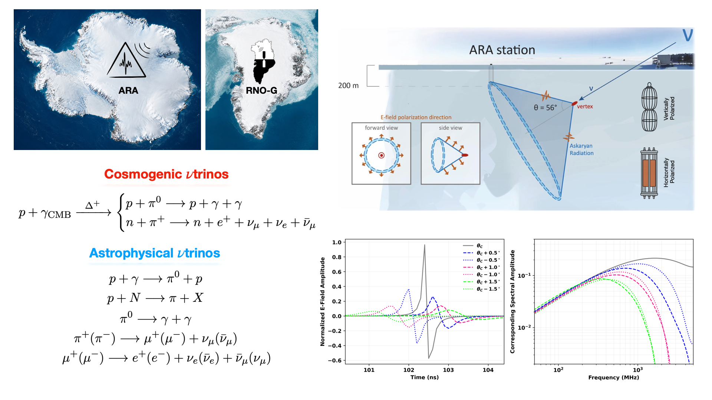

ARA Five-Station Search
Ultra-high Energy Neutrino Search
Core analyst for the first array-wide diffuse search using 10.6 years of Askaryan Radio Array data, with contributions to ARA01 integration, optimization, unblinding, and interpretation.
Research
My research focuses on neutrino astronomy with radio detectors in polar ice, spanning detector calibration, event reconstruction, radio background characterization, antennas, field measurements, and analysis methods.

Current Research
ARA Five-Station Search
Core analyst for the first array-wide diffuse search using 10.6 years of Askaryan Radio Array data, with contributions to ARA01 integration, optimization, unblinding, and interpretation.
Analysis Lead
Leading an array-wide search across all five ARA stations for down-going radio signals that are inconsistent with known anthropogenic backgrounds.
Analysis Lead
Studying astrophysical, environmental, and anthropogenic backgrounds, including solar activity, galactic noise, high-wind triboelectric events, radiosondes, and local sources.
ARA Station 1
Led the end-to-end ARA01 analysis framework, including detector calibration and data-driven modeling, event reconstruction, background rejection, and simulation.
Field Research
During the 2025 RNO-G calibration campaign at NSF Summit Station, I performed in situ radio-frequency measurements and equipment deployment for detector calibration studies.
Research Themes